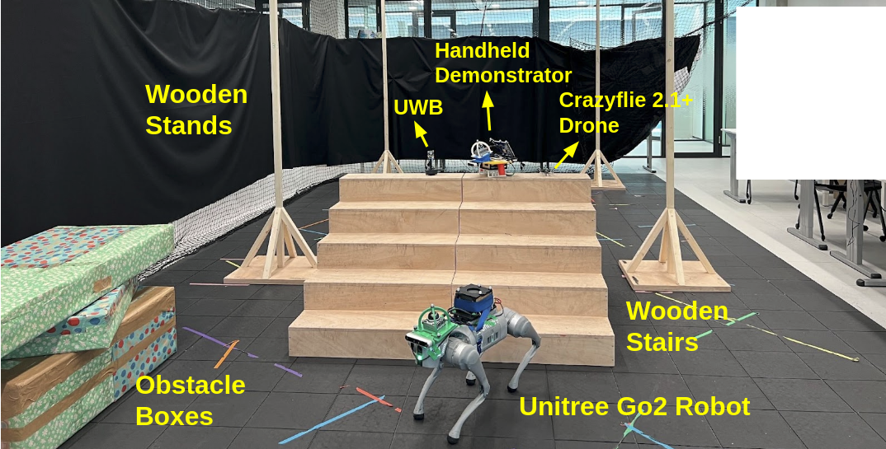

Embodied AI Lab for Education¶
Welcome to the Embodied AI Lab for Education, an open-source platform providing practical guides, software, and teaching resources for robotics and embodied intelligence.

The lab supports research-driven education through hands-on experiments in perception, localization, control, and autonomous systems. Its facilities include Unitree Go2 quadruped robots,
Crazyflie 2.1+ drones, an ultra-wideband (UWB) localization network, wooden stairs and stands, and custom-designed handheld platforms.
This documentation introduces the main hardware platforms and experimental tools available in the lab. You will learn how to work with:
- Crazyflie 2.1+ drones
- Ultra-wideband localization
- Visual-inertial odometry
- LiDAR-inertial odometry
- Manus motion-capture gloves
Together, these tools form a flexible platform for developing, testing, and demonstrating embodied AI methods.
The following section, Unitree Go2 Sim-to-Real, provides a complete workflow for training locomotion policies in simulation, validating them across simulators, and deploying them on a real Unitree Go2 robot.